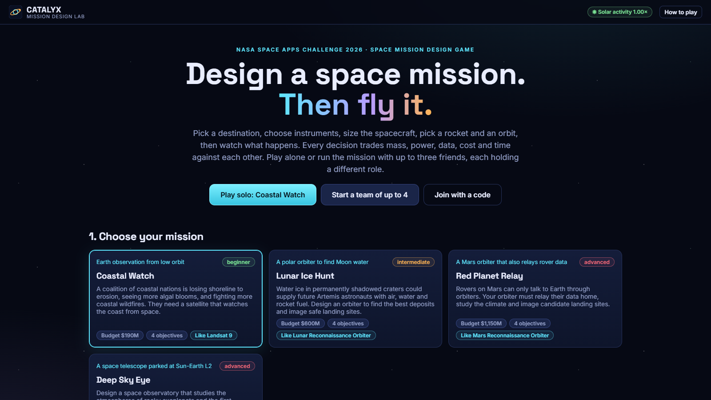
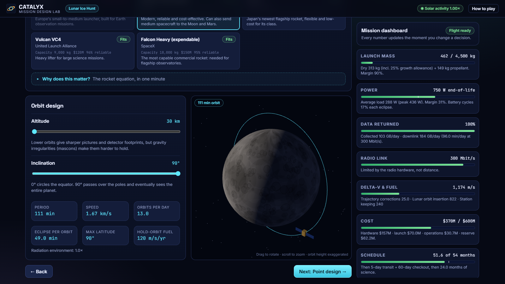
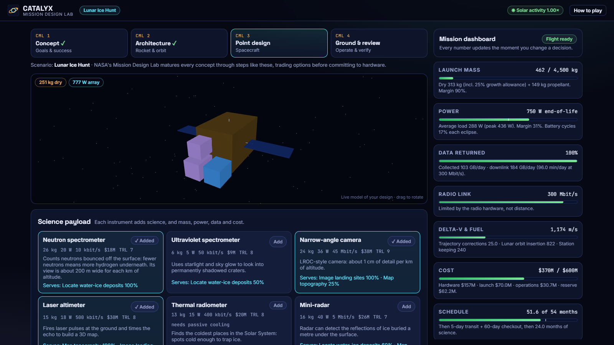
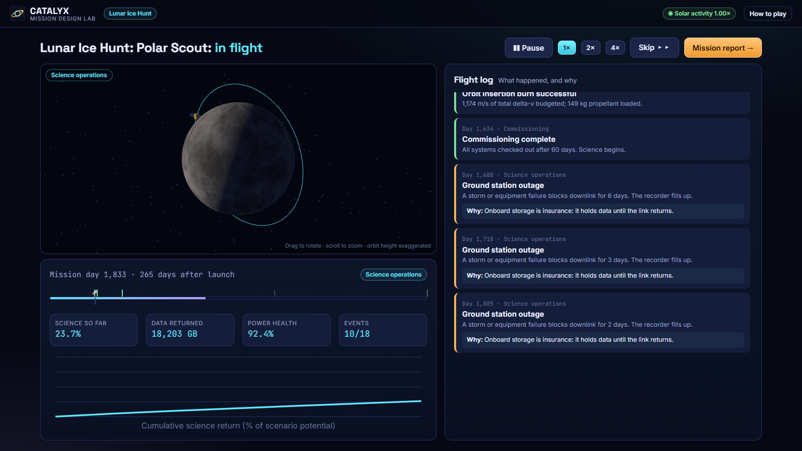
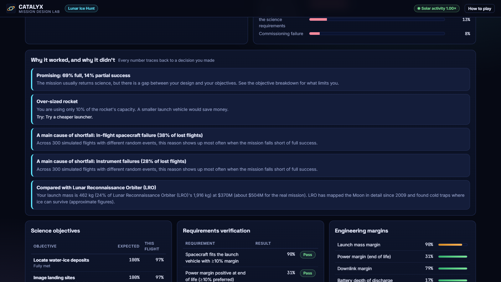
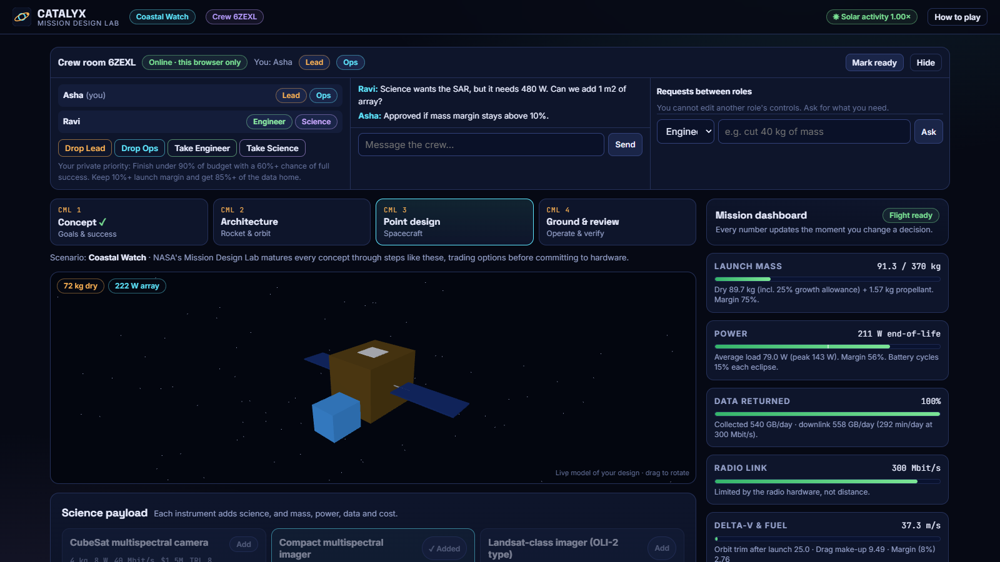

CATALYX Mission Design Lab is a free, browser-based game in which players take a space mission from idea to flight, the way NASA's Mission Design Lab does. A player picks a science goal, a launch vehicle and orbit, instruments, and sizes the spacecraft (power, radio, pointing, onboard computer, propulsion, thermal control, redundancy). A live dashboard shows how every choice moves mass, power, data return, link rate, delta-v, cost, schedule and reliability. When the player launches, the mission flies through random failures (solar storms, micrometeoroids, instrument anomalies, ground outages, cost growth), and 300 simulated flights produce a score and a debrief that explains why the mission succeeded or failed and what to try next.
"Most space education gives you one formula at a time. Real missions are about trade-offs: a bigger telescope needs a bigger rocket, which costs more, which breaks the budget. CATALYX makes you live those trade-offs. You design a mission, a live dashboard shows what each decision does to mass, power, data and cost, and then your spacecraft flies through random solar storms and failures. A debrief tells you exactly why it worked or failed. Up to four friends can play together, each holding a different role and a private priority, so they have to negotiate like a real mission team. It is built around NASA's own design method and uses live NASA space-weather data."
The NASA Space Apps challenge "Space Mission Design Game" asks teams to build an interactive game where players design a space mission under real constraints (mass, power, budget, data, communications, time), simulate it, and learn why it succeeds or fails. The table lists every objective and consideration from the challenge text and where the game answers it.
| Challenge item | Where it lives in the game |
|---|---|
| Define a mission objective and requirements | CML 1 Concept: choose science objectives (with partial/full success criteria) and mission length |
| Design spacecraft: structure, power, batteries, communications, onboard computers, attitude control, instruments | CML 3 Point design: bus class (structure), solar cells and array, battery, radio band / dish / power / storage, onboard computer (basic, standard, advanced: compression and autonomy), ADCS, propulsion, thermal, redundancy, parts quality, telescope mirror |
| Scientific instruments with mass, power, cost, data generation and science value | 23 instruments across the four scenarios; each shows mass, power, data rate, cost, TRL and exactly which objectives it serves |
| Simple vs advanced components depending on difficulty | Simple / Advanced view toggle (defaults by difficulty); advanced options are hidden in the simple view |
| Several orbit options with explained characteristics | CML 2: altitude, inclination, sun-synchronous and local time; live period, speed, eclipse, orbits per day, latitude reach, natural lifetime and radiation |
| Launch vehicles with capacity, cost and orbit capability, and a mass and orbit compatibility check | Launch-vehicle trade study (8 vehicles): capacity is computed for the chosen orbit and checked against launch mass (red blocker if too heavy) |
| Resources: mass, power, budget, data, communications, time | Live Mission dashboard for all of them (plus delta-v, schedule and reliability); each scenario marks its critical resources with a star |
| Mission simulation and evaluation system | Narrated flight plus 300 Monte Carlo flights; score from science, margins, cost, risk and process/teamwork |
| Clear feedback on *why* a mission succeeds or fails | Debrief with ranked causes, limiting factor per objective, requirement-verification matrix, "Why does this matter?" cards, red/amber checks that explain themselves |
| Interactive: modify the design and simulate many times | Edit freely, re-fly with new random events, save designs, compare them |
| Team mode for up to four, with roles, negotiation, coordination | Crew rooms: 4 roles with different controls, chat, requests between roles, private priorities, shared go/no-go; the team score depends on how many role priorities the crew satisfies together |
| Different difficulty levels, mission types, scenarios | 4 scenarios (Earth, Moon, Mars, L2), Cadet / Engineer / Flight Director, plus Sandbox |
| Random events or unexpected mission constraints | Solar storms, dust storms, micrometeoroids, instrument and wheel failures, ground outages, cost growth, and Mission Control twists (budget cut, solar maximum, rocket reassigned, extended mission, supplier delay) |
| Mission dashboards showing real-time resource consumption | Live telemetry during flight: battery charge through each eclipse, data recorder filling and emptying, propellant remaining, array output |
| Interactive spacecraft visualisations | Live 3D spacecraft that changes with every decision, 3D orbit viewer (Earth, Moon, Mars, L2), ground-track map |
| Leaderboards or mission rankings | Leaderboard on the home screen per scenario, with a benchmark score to beat, plus a daily challenge (same scenario and curveball for everyone each date) with a streak counter and 14 badges |
| Mission reports at the end of each simulation; post-mission analysis | Downloadable report, score ring, outcome distribution and causes of shortfall |
| Save, share and compare designs | Save slots, side-by-side Compare (including designs imported from a friend's share link), share link |
| Competitive scenarios where teams solve the same objective | Same scenario for everyone; share links and the leaderboard let teams compare results |
| Sandbox mode without predefined constraints | Sandbox difficulty removes the practical budget cap |
| Educational value: simple explanations, tutorials, visual indicators, optional learning resources | Welcome briefing, next-step coaching, "Why does this matter?" cards, a searchable glossary, links to NASA learning resources, in-flight Mission Control decisions where your call changes the outcome |
| Explain *why* a decision affects performance, not just right or wrong | Every check has a "Why" and a "Try" line; the debrief names the limiting number; the Mission Coach tries about a hundred one-change variants of your design with the real evaluator and shows which raises your expected score, with before/after numbers for mass, power, data, cost and reliability, and an Apply button |
| Step | What the player does | What the game shows |
|---|---|---|
| CML 1 Concept | Chooses science objectives (each has partial and full success criteria) and mission length. | Mission brief, real reference mission to beat, points per objective, instruments each objective needs. |
| CML 2 Architecture | Runs a launch-vehicle trade study and chooses an orbit (altitude, inclination, sun-synchronous, local time). | Capacity for that orbit, mass compatibility check, live period, speed, eclipse, orbits per day, latitude reach, natural lifetime, radiation. 3D orbit viewer. |
| CML 3 Point design | Picks instruments, bus class, solar cells and array, battery, radio band, dish, power and storage, onboard computer, pointing system, propulsion, thermal, redundancy, parts quality. | Live 3D spacecraft that changes with every choice, plus the full mission dashboard. |
| CML 4 Ground and review | Chooses ground stations (Earth) or Deep Space Network hours and dish (deep space) and checks margins. | Propagated contact minutes per day, data return, requirement verification. |
| Launch | Mission Lead gives the final go. Each role reports GO / CAUTION / NO-GO in a countdown poll. | T-minus countdown with the checks that matter to each role. |
| Flight | Watches the narrated flight with live telemetry; makes a solar-storm decision (ride it out or safe mode). | Battery charge through eclipses, data recorder fill, propellant, array output, events with explanations. |
| Debrief | Reads the report, then improves the design or re-flies with new random events. | Score, outcome distribution of 300 flights, ranked causes of shortfall, requirement matrix, comparison with the real mission. |






A coalition of coastal nations is losing shoreline to erosion, seeing more algal blooms, and fighting more coastal wildfires. They need a satellite that watches the coast from space. You have a fixed budget and one launch: design the mission.
Real mission to beat: Landsat 9 (NASA / USGS), launch mass about 2,711 kg, 705 km sun-synchronous. Landsat 9 carries a 30 m imager and a thermal sensor and has extended a 50-year record of Earth's land (approximate cost figure).
Budget caps: Cadet $260M, Engineer $190M, Flight Director $140M · Launch window: 60 months to build
Critical resources (starred in the game): data, power. Imagers produce far more data than a small satellite can downlink, and every orbit spends a third of its time in the shadow of Earth on battery power.
| Objective | Points | Needs |
|---|---|---|
| Map shoreline change (primary): Track coastal erosion and land loss. | 40 | resolution ≤ 30 m, revisit ≤ 20 d, reach 70° lat, 12 months ops |
| Monitor water quality: Find algal blooms and sediment plumes. | 25 | resolution ≤ 250 m, revisit ≤ 5 d, reach 60° lat, 12 months ops |
| Detect coastal fires: Spot heat from wildfires in hours. | 20 | resolution ≤ 150 m, revisit ≤ 6 d, reach 60° lat, 12 months ops |
| Measure sea-surface temperature: Warm water drives storms and fish stocks. | 15 | resolution ≤ 1000 m, revisit ≤ 6 d, reach 70° lat, 12 months ops |
Benchmark (worked-example design): score 72/100 (grade B); full success in 0% of 300 flights; cost $133M of $190M; launch mass 161 kg.
Water ice in permanently shadowed craters could supply future Artemis astronauts with air, water and rocket fuel. Design an orbiter to find the best deposits and image safe landing sites.
Real mission to beat: Lunar Reconnaissance Orbiter (LRO) (NASA), launch mass about 1,916 kg, 50 km polar (later elliptical). LRO has mapped the Moon in detail since 2009 and found cold traps where ice can survive (approximate figures).
Budget caps: Cadet $780M, Engineer $600M, Flight Director $480M · Launch window: 54 months to build · Cruise: 5 days
Critical resources (starred in the game): mass, dv. Braking into lunar orbit burns a lot of fuel, so every kilogram of spacecraft must be justified against the capacity of the rocket.
| Objective | Points | Needs |
|---|---|---|
| Locate water-ice deposits (primary): Find hydrogen-rich regions near the poles. | 40 | resolution ≤ 12000 m, reach 80° lat, 12 months ops |
| Image landing sites: Pictures of about 1 m detail. | 25 | resolution ≤ 1.2 m, reach 80° lat, 12 months ops |
| Map topography: A precise 3D map of the poles. | 20 | resolution ≤ 12 m, reach 80° lat, 12 months ops |
| Map surface temperature: Find the cold traps that keep ice stable. | 15 | resolution ≤ 500 m, reach 80° lat, 10 months ops |
Benchmark (worked-example design): score 87/100 (grade A); full success in 66% of 300 flights; cost $373M of $600M; launch mass 468 kg.
Rovers on Mars can only talk to Earth through orbiters. Your orbiter must relay their data home, study the climate and image candidate landing sites. A six-month voyage and a tough braking burn lie ahead.
Real mission to beat: Mars Reconnaissance Orbiter (MRO) (NASA), launch mass about 2,180 kg, 255 x 320 km near-polar. MRO has relayed rover data and photographed Mars since 2006 (approximate figures).
Budget caps: Cadet $1500M, Engineer $1150M, Flight Director $900M · Launch window: 54 months to build · Cruise: 210 days
Critical resources (starred in the game): link, dv. The signal crosses hundreds of millions of kilometres, and the Mars braking burn needs about half the arrival mass as propellant.
| Objective | Points | Needs |
|---|---|---|
| Relay rover data to Earth (primary): Gather rover data on each pass and send it home. | 35 | downlink ≥ 3 GB/day, 36 months ops |
| Profile the atmosphere: Watch dust storms and water through a Mars year. | 25 | resolution ≤ 5000 m, reach 75° lat, 24 months ops |
| Image landing sites: Pictures at better than 1 m. | 25 | resolution ≤ 0.8 m, reach 60° lat, 12 months ops |
| Map buried ice: Find subsurface ice for future human missions. | 15 | resolution ≤ 1000 m, reach 70° lat, 18 months ops |
Benchmark (worked-example design): score 78/100 (grade A); full success in 73% of 300 flights; cost $489M of $1150M; launch mass 885 kg.
Design a space observatory that studies the atmospheres of rocky exoplanets and the first galaxies. It will sit 1.5 million km from Earth at the second Sun-Earth Lagrange point, where it can stay cold in the shade of its sunshield.
Real mission to beat: James Webb Space Telescope (NASA / ESA / CSA), launch mass about 6,161 kg, Sun-Earth L2 halo orbit. JWST unfolded a 6.5 m mirror and a tennis-court sunshield in space (approximate figures).
Budget caps: Cadet $6500M, Engineer $5200M, Flight Director $4300M · Launch window: 120 months to build · Cruise: 30 days
Critical resources (starred in the game): cost, schedule. A flagship observatory is limited by money and by the launch window: a bigger mirror quickly breaks both.
| Objective | Points | Needs |
|---|---|---|
| Read exoplanet atmospheres (primary): Chemical fingerprints of nearby rocky worlds. | 40 | aperture ≥ 4 m, 36 months ops |
| Deep-field infrared survey: Find the earliest galaxies. | 30 | aperture ≥ 3 m, 24 months ops |
| Image giant planets directly: Block the star, see the planet. | 20 | aperture ≥ 2 m, 18 months ops |
| Ultraviolet galaxy survey: Hot young stars across cosmic time. | 10 | aperture ≥ 1.5 m, 12 months ops |
Benchmark (worked-example design): score 75/100 (grade B); full success in 79% of 300 flights; cost $4650M of $5200M; launch mass 3215 kg.


| Vehicle | Agency | Cost ($M) | Reliability | LEO kg | SSO kg | To Moon kg | To Mars kg |
|---|---|---|---|---|---|---|---|
| Rideshare (secondary payload) | Commercial / ISRO / SpaceX rideshare | $6.5k per kg | 97% | 500 | 400 | cannot | cannot |
| Electron | Rocket Lab | 8 | 93% | 320 | 230 | cannot | cannot |
| PSLV-XL | ISRO (India) | 30 | 94% | 3800 | 1750 | cannot | cannot |
| Vega-C | ESA / Avio | 38 | 94% | 3300 | 2300 | cannot | cannot |
| Falcon 9 (expendable) | SpaceX | 70 | 99% | 22800 | 12000 | 4500 | 4020 |
| H3-24 | JAXA (Japan) | 55 | 93% | 8000 | 4000 | 2900 | 1800 |
| Vulcan VC4 | United Launch Alliance | 120 | 96% | 24000 | 17000 | 9000 | 6000 |
| Falcon Heavy (expendable) | SpaceX | 150 | 95% | 63800 | 40000 | 18000 | 16800 |
| Instrument | Mass kg | Power W | Data Mbit/s | Cost $M | TRL |
|---|---|---|---|---|---|
| CubeSat multispectral camera: Tiny colour camera | 4 | 8 | 40 | 1.5 | 8 |
| Compact multispectral imager: Mid-size 15 m imager | 30 | 60 | 250 | 14 | 7 |
| Landsat-class imager (OLI-2 type): Flagship 30 m imager | 120 | 150 | 400 | 95 | 9 |
| Ocean-colour spectrometer: Wide-swath ocean colour | 18 | 22 | 35 | 28 | 7 |
| Thermal infrared radiometer: Heat camera (fires, sea temp) | 28 | 45 | 20 | 40 | 8 |
| Compact SAR radar: Sees through clouds, day and night | 85 | 480 | 300 | 105 | 8 |
| Neutron spectrometer: Detects hydrogen (water ice) | 26 | 20 | 0.01 | 18 | 7 |
| Ultraviolet spectrometer: Sees ice inside dark craters | 6 | 5 | 0.05 | 9 | 8 |
| Narrow-angle camera: 0.5 m detail for landing sites | 24 | 36 | 45 | 38 | 9 |
| Laser altimeter: Measures heights | 15 | 18 | 0.5 | 30 | 8 |
| Thermal radiometer: Maps surface temperature | 13 | 15 | 0.4 | 20 | 8 |
| Mini-radar: Looks for ice inside the crater floor | 16 | 40 | 5 | 26 | 7 |
| UHF relay package: Talks to rovers on the surface | 8 | 40 | 2 | 22 | 9 |
| Climate sounder: Profiles dust, water, temperature | 9 | 12 | 0.05 | 24 | 8 |
| High-resolution camera: 0.3 m pictures | 65 | 60 | 120 | 85 | 9 |
| Context camera: 6 m wide-area pictures | 20 | 32 | 30 | 30 | 9 |
| Shallow subsurface radar: Finds buried ice | 20 | 65 | 3 | 42 | 9 |
| Mineral spectrometer: Reads rock and water chemistry | 30 | 40 | 25 | 55 | 8 |
| Near-infrared camera: Early galaxies | 180 | 180 | 25 | 280 | 9 |
| Near-infrared spectrograph: Reads exoplanet atmospheres | 200 | 220 | 15 | 340 | 8 |
| Mid-infrared instrument: Cool dust and planets | 140 | 170 | 20 | 300 | 7 |
| Coronagraph: Blocks starlight to image planets | 120 | 150 | 8 | 260 | 6 |
| UV / optical imager: Galaxy evolution | 150 | 160 | 40 | 170 | 9 |
| Subsystem | Options |
|---|---|
| Bus (structure) | 12U CubeSat (up to 24 kg dry); Small satellite (ESPA class) (up to 250 kg dry); Standard bus (up to 1500 kg dry); Flagship bus (up to 9000 kg dry) |
| Solar cells | Silicon; Gallium arsenide; Triple-junction |
| Radio bands | UHF (0.4 GHz); S-band (2.2 GHz); X-band (8 GHz); Ka-band (26 GHz) |
| Onboard computer | Basic flight computer (1x data compression); Standard computer + compression (2x data compression); Advanced computer with onboard processing (4x data compression) |
| Propulsion | No propulsion (Isp 0 s); Cold gas (Isp 65 s); Monopropellant (hydrazine) (Isp 225 s); Bipropellant (Isp 315 s); Electric (ion/Hall) (Isp 1600 s) |
| Also | Attitude control (magnetorquers, reaction wheels, star tracker), thermal control (none, passive, active), redundancy (0 to 2), parts quality (commercial, high-reliability, radiation-hardened), battery size, antenna dish and transmitter power, data storage, telescope mirror, Mars aerobraking. |
8 Earth ground stations (e.g. Svalbard, Norway, Fairbanks, Alaska, Troll, Antarctica, Bengaluru, India) with propagated pass times; for deep space, NASA Deep Space Network time (hours per day) with a 34 m or 70 m dish.
All engine code is in src/engine and has no UI dependencies, so it is unit tested directly. Numbers are rounded, educational approximations of public references.
| Model | What it does |
|---|---|
| Orbital mechanics | Two-body orbits for Earth, Moon, Mars; period and speed; sun-synchronous inclination from the J2 oblateness term (about 98.2 degrees at 705 km, as Landsat); eclipse fraction from geometry; Sun-Earth L2 halo orbit for the telescope. |
| Delta-v and propellant | Hohmann transfer and orbit-capture delta-v (lunar capture about 0.8 km/s, Mars about 2 km/s); drag make-up; station keeping; propellant sized iteratively with the Tsiolkovsky rocket equation including tank mass. |
| Mass | Current Best Estimate plus a mass growth allowance of 20 to 30% (by difficulty) gives the Maximum Expected Value; compared with launch capacity for the chosen orbit (log-interpolated between published energy anchors). |
| Atmospheric drag | Density model with solar-activity scaling (fed by NASA DONKI), giving natural orbit lifetime and yearly drag delta-v. |
| Power | Solar flux at the body, cell efficiency and degradation, array area, eclipse time, battery depth of discharge and cycle life, peak versus average load. |
| Communications | Decibel link budget: transmit power, antenna gain, free-space path loss, pointing loss, receiver G/T and a hardware rate cap; contact minutes per day from propagated ground-station passes (4 orbit orientations) or DSN hours. |
| Data | Instrument data rates and duty cycles, onboard compression, recorder size and overflow, downlink capacity, fraction returned. |
| Cost and schedule | Parametric hardware, integration, launch, operations and reserve; development months against the launch window with a slip penalty. |
| Reliability | Exponential failure model with redundancy, parts quality and radiation exposure; launch and insertion reliability. |
| Flight simulation | Seeded random flights (mulberry32): launch failure, insertion risk, solar storms (using NASA-derived solar activity), micrometeoroids, instrument and wheel anomalies, dust storms at Mars, ground outages, cost growth against the reserve, safe-mode recovery. |
| Monte Carlo | 300 flights per design give the probability of full, partial and failed success, the spread of science return and the ranked causes of shortfall. |
| Component | Points | Based on |
|---|---|---|
| Science return | 45 | Mean fraction of the scenario's science delivered over 300 flights. |
| Engineering margins | 20 | Mass, power, data, battery depth of discharge, cost and schedule margins in a healthy band. |
| Cost efficiency | 15 | Total cost against the budget cap. |
| Risk and reliability | 10 | Overall mission reliability and probability of failure. |
| Process and learning | 10 (solo) or 4 (team) | Visiting all four steps, iterating on the design, opening learning cards, comparing designs. |
| Teamwork | 6 (team only) | Role priorities satisfied together, requests resolved, everyone ready before launch. |
Grades: S 88 and above, A 76, B 64, C 52, D 38, otherwise F. The first flight shown is a typical one (the most likely outcome), so one unlucky seed cannot contradict the score. Best designs found by an automated optimiser score about 74 to 88, so grade S is possible but hard.
| Scenario | Score | Grade | Full success | Mean science | Cost |
|---|---|---|---|---|---|
| Coastal Watch | 72 | B | 0% | 46% | $133M of $190M |
| Lunar Ice Hunt | 87 | A | 66% | 68% | $373M of $600M |
| Red Planet Relay | 78 | A | 73% | 50% | $489M of $1150M |
| Deep Sky Eye | 75 | B | 79% | 58% | $4650M of $5200M |
One to four players share one mission through a five-letter room code or an invite link. No account is needed.
| Role | Owns | Private priority (hidden from others until the report) |
|---|---|---|
| Mission Lead | Objectives, mission length, launch decision | Finish under 90% of budget with a 60%+ chance of full success. |
| Launch & Ops Lead | Launch vehicle, orbit, ground segment | Keep 10%+ launch margin and get 85%+ of the data home. |
| Spacecraft Engineer | Bus, power, ADCS, propulsion, redundancy | Power margin 10%+, battery depth of discharge under 35%, 80%+ survival. |
| Science & Comms Lead | Instruments, antenna, radio, storage | Reach 70%+ of the primary objective and 55%+ of total science. |


| Area | Details |
|---|---|
| Stack | TypeScript, React 18, Vite 5, Three.js 0.170 (3D), Zustand (state), PeerJS 1.5 (WebRTC rooms), optional Supabase Realtime, Vitest 2. |
| Architecture | Pure engine (src/engine: physics, evaluate, simulate, coach, gmat, nasa) with no UI imports; data catalogues (src/data); one Zustand store (src/state) for game and team state; React screens (src/ui): Home, Lab, Flight, Report, Team lobby and dock, Glossary, Coach. |
| Hosting | Static site on GitHub Pages (no server needed); source in a public GitHub repository. Space weather and team rooms need no backend of our own. |
| Tests | 34 automated tests: orbital physics against textbook values (ISS period about 92 minutes, sun-synchronous inclination at 705 km about 98.2 degrees, lunar and Mars capture delta-v), launch-capacity checks, worked examples, a fuzz test that evaluates and simulates 600 random designs without a crash or NaN, onboard-computer and twist effects, in-flight decision, Mission Coach, daily challenge and streak logic. |
| End-to-end checks | All four scenarios flown clean in a real browser; four isolated browser sessions played a full team game (roles, locks, chat, shared countdown, shared storm decision) and all four ended on the same score; phone-sized emulation showed no horizontal overflow or errors on every screen; live NASA DONKI fetch confirmed working (rate-limited key falls back gracefully). |
| Size | 6,392 lines across 36 source files; production build about 345 kB of JavaScript gzipped. |
| Accessibility | Keyboard-operable controls, visible focus outlines, ARIA labels and roles, reduced-motion support, colour plus text for status (not colour alone). |
An SI assistant (a large language model coding assistant) was used extensively: it proposed and refined most of the game design (scenarios, scoring, roles), and wrote and reviewed the source code, unit tests, demo-deck layout and documentation. The team chose the challenge, directed the work and takes responsibility for the submission. No SI-generated images, audio or video are used: every screenshot is a capture of the running game. This is also stated in the project README.
All images are captures of the running game (files in docs/deck/img/ of the repository).
01-home.png: Home: mission picker, challenge levels, leaderboard, daily challenge
03-lab-concept.png: CML 1 Concept
04-architecture-orbit.png: CML 2 Architecture with orbit viewer
05-point-design-lunar.png: CML 3 Point design, lunar scenario
06-flight.png: Flight with events and telemetry
07-report-top.png: Debrief report
08-report-why.png: Why it worked / why it did not
09-point-design-l2.png: L2 telescope design
10-l2-orbit.png: L2 halo orbit
11-team-lobby.png: Team lobby
12-team-lab.png: Team lab
| Term | Plain-language meaning |
|---|---|
| Delta-v (Δv) | How much a spacecraft must change its speed |
| Rocket equation | Why fuel needs fuel |
| Isp (specific impulse) | Miles-per-gallon of a rocket engine |
| Orbit / altitude / inclination | Where and how the spacecraft circles |
| Sun-synchronous orbit (SSO) | A polar orbit that keeps the same Sun angle |
| Eclipse | Time spent in the planet's shadow |
| Depth of discharge (DoD) | How much of the battery you use each cycle |
| Swath | Width of the strip a camera sees |
| Revisit time | How often you see the same place again |
| Ground resolution | The size of one pixel on the ground |
| Link budget | Accounting for a radio signal |
| dB, dBi, G/T | Decibels: the language of radio |